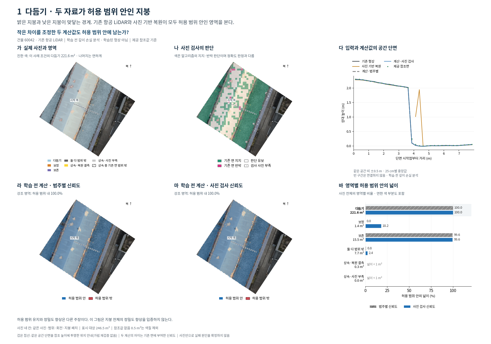
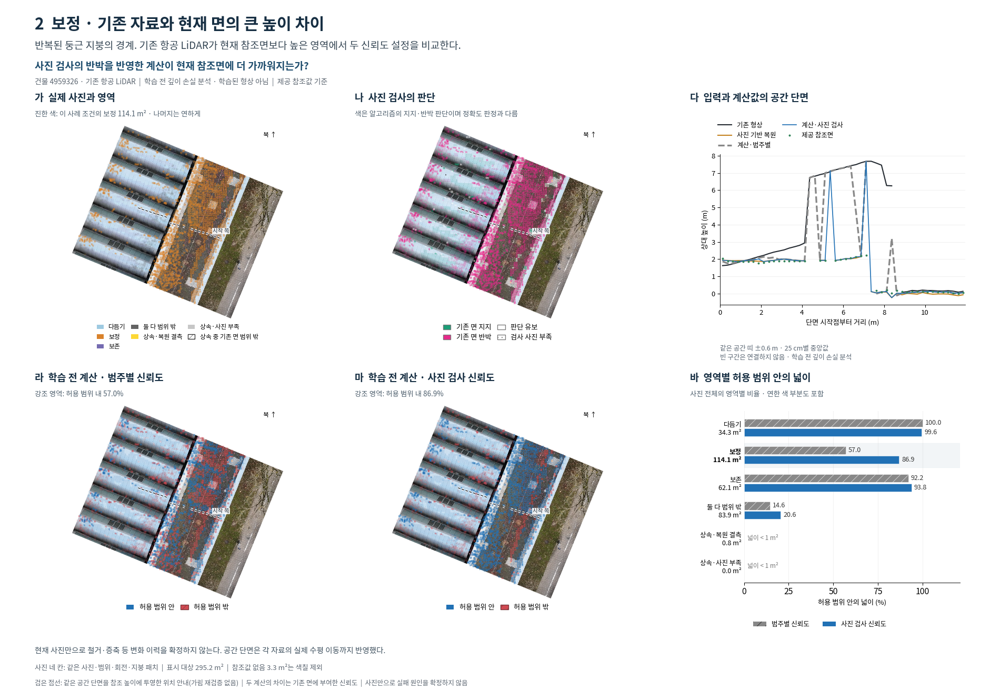
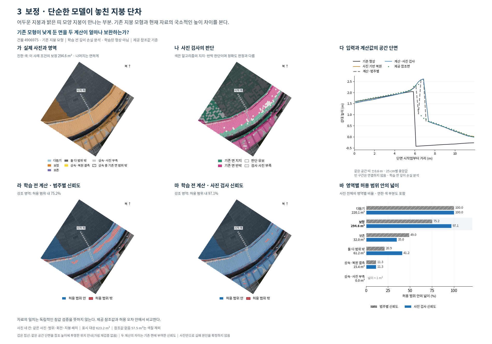
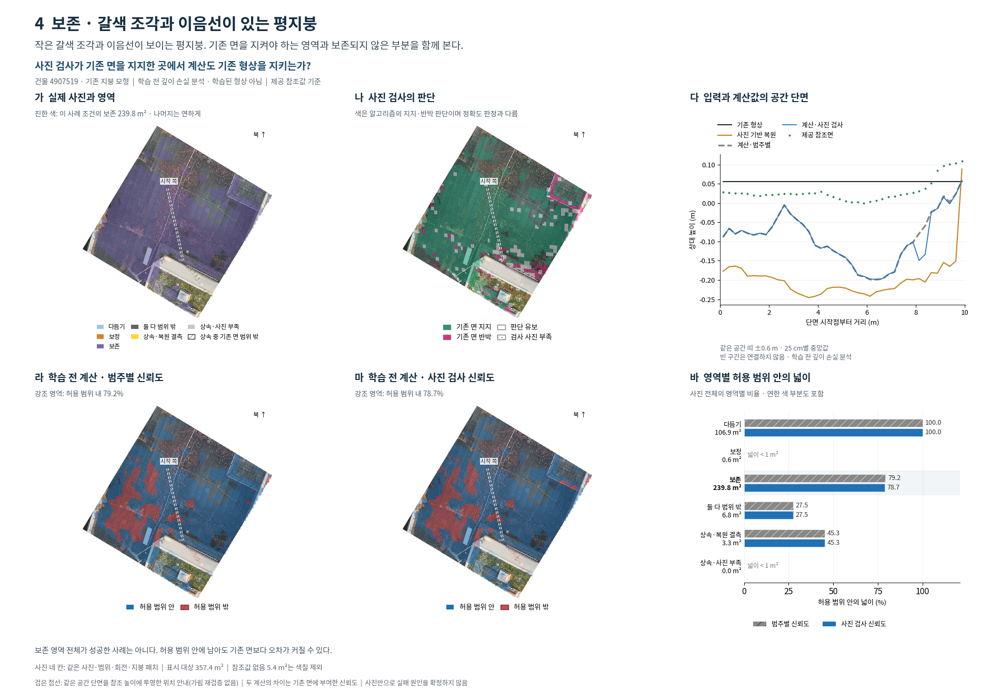
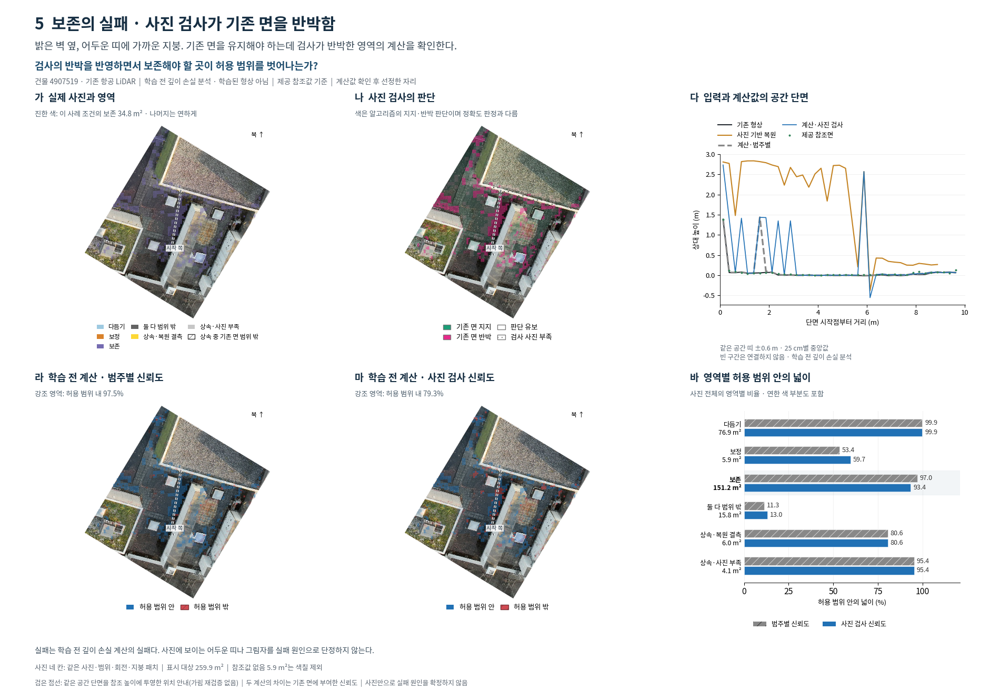
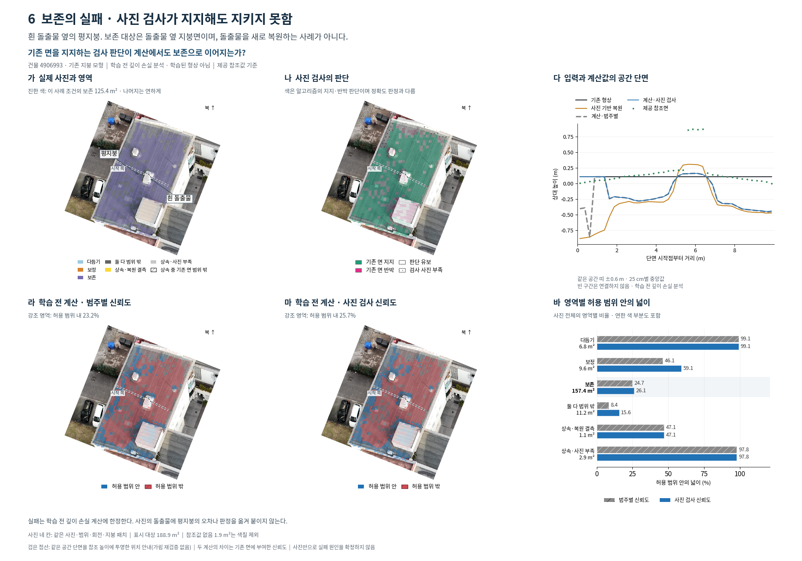
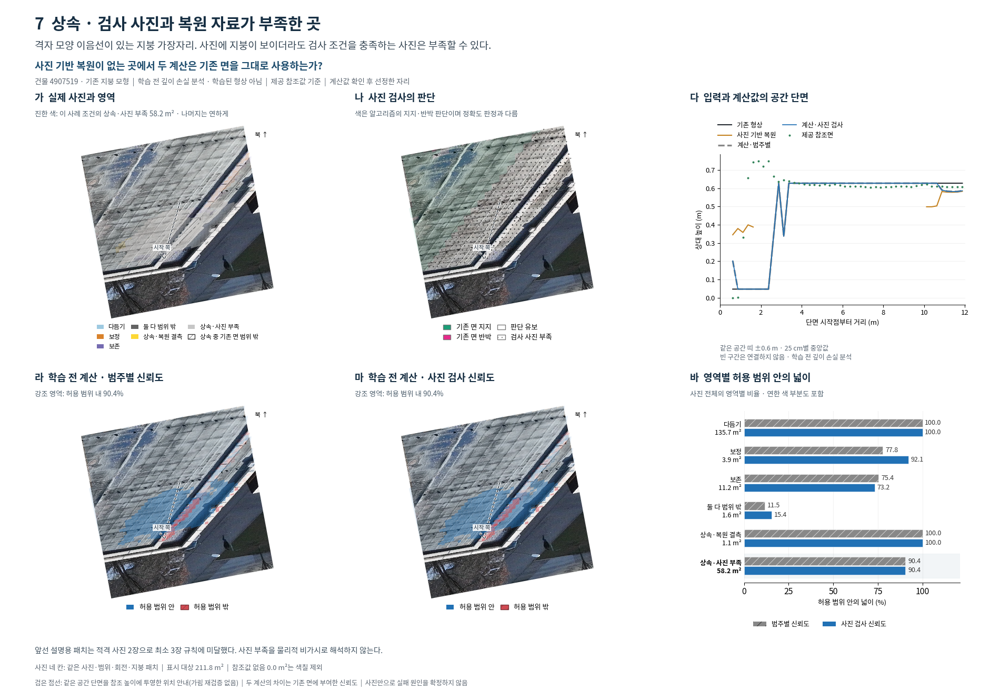
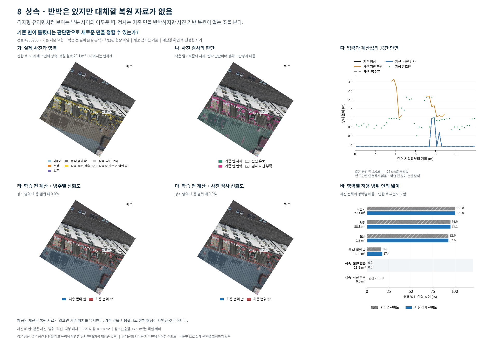

영역별 사진 검사와 학습 전 계산
두 줄·세 칸으로 복원한 여덟 사례. 학습된 형상이 아닌, 제공된 깊이 손실 최소점 분석입니다.
8장 PDF · 설명과 검증
1. 다듬기 · 두 자료가 허용 범위 안인 지붕
밝은 지붕과 낮은 지붕이 맞닿는 경계. 기존 항공 LiDAR와 사진 기반 복원이 모두 허용 범위 안인 영역을 본다.

강조 영역 221.6 m²: 범주별 100.0%, 사진 검사 기반 100.0%. 사진 전체 다듬기 221.6 m²: 100.0% / 100.0%. 허용 범위 유지와 정밀도 향상은 다른 주장이다. 이 그림은 지붕 전체의 정밀도 향상을 입증하지 않는다.
2. 보정 · 기존 자료와 현재 면의 큰 높이 차이
반복된 둥근 지붕의 경계. 기존 항공 LiDAR가 현재 참조면보다 높은 영역에서 두 신뢰도 설정을 비교한다.

강조 영역 114.1 m²: 범주별 57.0%, 사진 검사 기반 86.9%. 사진 전체 보정 114.1 m²: 57.0% / 86.9%. 현재 사진만으로 철거·증축 등 변화 이력을 확정하지 않는다. 공간 단면은 각 자료의 실제 수평 이동까지 반영했다.
3. 보정 · 단순한 모델이 놓친 지붕 단차
어두운 지붕과 밝은 띠 모양 지붕이 만나는 부분. 기존 지붕 모형과 현재 자료의 국소적인 높이 차이를 본다.

강조 영역 294.6 m²: 범주별 75.2%, 사진 검사 기반 97.1%. 사진 전체 보정 294.6 m²: 75.2% / 97.1%. 자료의 일치는 독립적인 참값 검증을 뜻하지 않는다. 제공 참조값과 허용 오차 안에서 비교한다.
4. 보존 · 갈색 조각과 이음선이 있는 평지붕
작은 갈색 조각과 이음선이 보이는 평지붕. 기존 면을 지켜야 하는 영역과 보존되지 않은 부분을 함께 본다.

강조 영역 239.8 m²: 범주별 79.2%, 사진 검사 기반 78.7%. 사진 전체 보존 239.8 m²: 79.2% / 78.7%. 보존 영역 전체가 성공한 사례는 아니다. 허용 범위 안에 남아도 기존 면보다 오차가 커질 수 있다.
5. 보존의 실패 · 사진 검사가 기존 면을 반박함
밝은 벽 옆, 어두운 띠에 가까운 지붕. 기존 면을 유지해야 하는데 검사가 반박한 영역의 계산을 확인한다.

강조 영역 34.8 m²: 범주별 97.5%, 사진 검사 기반 79.3%. 사진 전체 보존 151.2 m²: 97.0% / 93.4%. 실패는 학습 전 깊이 손실 계산의 실패다. 사진에 보이는 어두운 띠나 그림자를 실패 원인으로 단정하지 않는다.
6. 보존의 실패 · 사진 검사가 지지해도 지키지 못함
흰 돌출물 옆의 평지붕. 보존 대상은 돌출물 옆 지붕면이며, 돌출물을 새로 복원하는 사례가 아니다.

강조 영역 125.4 m²: 범주별 23.2%, 사진 검사 기반 25.7%. 사진 전체 보존 157.4 m²: 24.7% / 26.1%. 실패는 학습 전 깊이 손실 계산에 한정한다. 사진의 돌출물에 평지붕의 오차나 판정을 옮겨 붙이지 않는다.
7. 상속 · 검사 사진과 복원 자료가 부족한 곳
격자 모양 이음선이 있는 지붕 가장자리. 사진에 지붕이 보이더라도 검사 조건을 충족하는 사진은 부족할 수 있다.

강조 영역 58.2 m²: 범주별 90.4%, 사진 검사 기반 90.4%. 사진 전체 상속·사진 부족 58.2 m²: 90.4% / 90.4%. 앞선 설명용 패치는 적격 사진 2장으로 최소 3장 규칙에 미달했다. 사진 부족을 물리적 비가시로 해석하지 않는다.
8. 상속 · 반박은 있지만 대체할 복원 자료가 없음
격자형 유리면처럼 보이는 부분 사이의 어두운 띠. 검사는 기존 면을 반박하지만 사진 기반 복원이 없는 곳을 본다.

강조 영역 20.1 m²: 범주별 0.0%, 사진 검사 기반 0.0%. 사진 전체 상속·복원 결측 25.6 m²: 0.0% / 0.0%. 제공된 계산은 복원 자료가 없으면 기존 위치를 유지한다. 기존 값을 사용했다고 현재 형상이 확인된 것은 아니다.